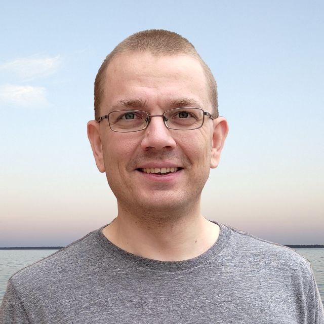

I am an applied scientist at Amazon, working on device security, with particular emphasis on device provisioning and attestation. Previously, I was a postdoctoral researcher in the Applied Cryptography Group at ETH Zürich led by Kenny Paterson. I earned a PhD in Computer Science at UC San Diego, advised by Mihir Bellare. During my earlier university studies, I worked as a software developer, including on the development of a white-box cryptography library.
More details are available on my LinkedIn and in my CV.
Analysis of the Telegram Key Exchange
EUROCRYPT 2025.
Lenka's talk and slides at EC 2025.
Symmetric Signcryption and E2EE Group Messaging in Keybase
EUROCRYPT 2024.
Akshaya's talk and PowerPoint slides at EC 2024; Akshaya's talk and slides at RWC 2025.
Four Attacks and a Proof for Telegram
IEEE S&P 2022 (Distinguished Paper Award).
Journal of Cryptology 2026.
webpage; Lenka's talk at IEEE S&P 2022; my slides at Joint Latvian-Estonian Theory Days 2022; my talk and slides at RWC 2022; my comments in popular press.
Security under Message-Derived Keys: Signcryption in iMessage
EUROCRYPT 2020.
my pre-recorded talk and slides, and live talk at EC 2020.
On the Security of Two-Round Multi-Signatures
IEEE S&P 2019.
Manu's talk, slides, and talk preview at IEEE S&P 2019; Gregory's talk and slides at RWC 2019.
Optimal Channel Security Against Fine-Grained State Compromise: The Safety of Messaging
CRYPTO 2018.
Joseph's talk and slides at CRYPTO 2018.
Forward-Security under Continual Leakage
CANS 2017.
Ratcheted Encryption and Key Exchange: The Security of Messaging
CRYPTO 2017.
Joseph's talk at CRYPTO 2017.
New Negative Results on Differing-Inputs Obfuscation
EUROCRYPT 2016.
my (truncated) talk and slides at EC 2016.
Contention in Cryptoland: Obfuscation, Leakage and UCE
TCC 2016-A.
Stefano's talk at the Simons Workshop on Securing Computation; my slides (combined for two papers) at TCC 2016-A.
Point-Function Obfuscation: A Framework and Generic Constructions
TCC 2016-A.
my slides (combined for two papers) at TCC 2016-A.
Poly-Many Hardcore Bits for Any One-Way Function and a Framework for Differing-Inputs Obfuscation
ASIACRYPT 2014.
my slides at AC 2014.
Advising: Tijana Klimovic (ETH Zürich, MSc thesis, Mar 2021–Sep 2021). "Modular Design of the Messaging Layer Security (MLS) Protocol". Co-Advisor: Kenneth G. Paterson.
Program committee (PC) memberships for scientific conferences:
Sub-reviewing for scientific conferences:
TA appointments at ETH Zürich:
TA appointments at UC San Diego:
I taught programming to groups of high school students in 2007–2010 and 2012–2013, as a part-time job at Progmeistars.
The Power of Halting in Security Games
Slides at ProTeCS 2025 workshop.
A technical description and a toy implementation of an LWE-based FHE scheme.
My project for the lattice class taught by Daniele Micciancio at UC San Diego in Spring 2014.
The scheme was defined in class and is roughly based on GSW13, BV14, AP14.
Selected Relations Between Obfuscation Notions
A diagram that presents some of the results from my TCC 2016-A and EUROCRYPT 2016 papers in the context of prior work.
Survey of Fully Homomorphic Encryption
MSc dissertation, Royal Holloway, University of London, 2012.
Query Complexity of Boolean Functions with Low Polynomial Degree
(in Latvian)
MSc thesis, University of Latvia, 2012.
my slides at Joint Estonian-Latvian Theory Days 2012.
Query Complexity of Boolean Functions with Low Polynomial Degree
(in Latvian)
BSc thesis, University of Latvia, 2010.